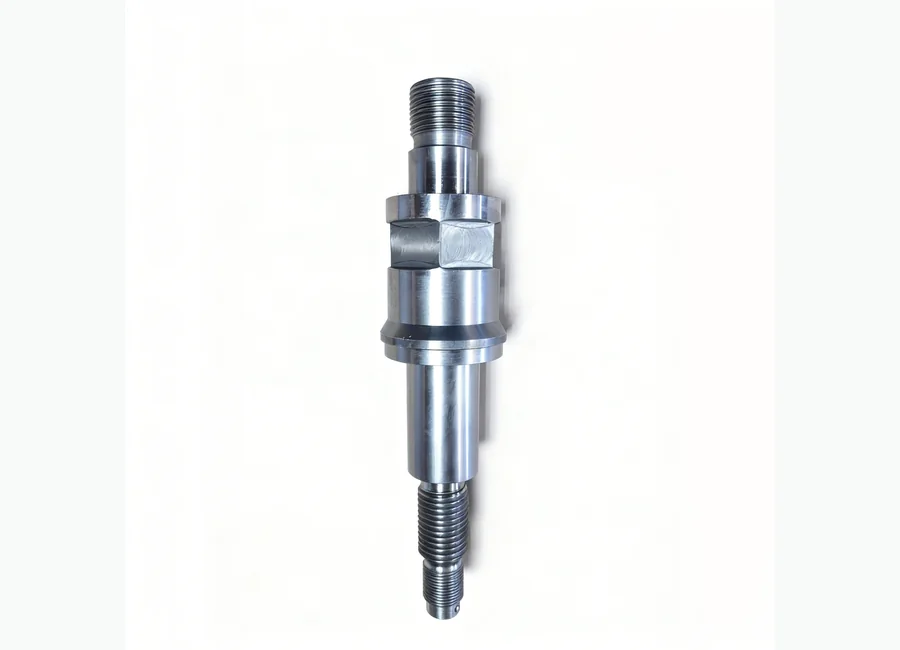

كيفية طلب عرض سعر
- أرسل رقم القطعة أو موديل المعدة.
- أرفق صورة المنتج أو الرسم الفني إن توفر.
- سنراجع المطابقة ونجهز تفاصيل العرض.
مضخات الطين وقطع الغيار
مضخات الطين وقطع الغيار. UNBT سلسلة مضخة الطين قضيب لمشاريع صيانة واستبدال معدات حقول النفط. يمكن للمشتري إرسال رقم القطعة أو موديل المعدة أو صورة المنتج أو الرسم الفني لطلب عرض سعر.

UNBT سلسلة مضخة الطين قضيب لمشاريع صيانة واستبدال معدات حقول النفط. يمكن للمشتري إرسال رقم القطعة أو موديل المعدة أو صورة المنتج أو الرسم الفني لطلب عرض سعر.
دعم مطابقة المواصفات وتغليف التصدير والتواصل عبر واتساب والبريد الإلكتروني لمشتري حقول النفط.
الوصف
الصور المخصصة لمواد الوصف تظهر هنا ولا تستخدم كصورة بطاقة المنتج.
لم يتم رفع صورة وصف لهذا المنتج حتى الآن.
مطابقة رقم القطعة
احتوت مواد المصدر على أرقام مرجعية، لكن أسماء الجدول الأصلي لم تكن موثوقة بما يكفي للنشر المباشر. تم الاحتفاظ بالأرقام للمطابقة وتأكيد عرض السعر.
أرسل رقم OEM أو موديل المضخة أو موديل الجهاز أو صورة المنتج أو الرسم الفني. ندعم مطابقة رقم القطعة ومطابقة الرسوم ومطابقة العينة لقطع غيار أجهزة الحفر ومضخات الطين والونشات والهيدروليك ومعدات رأس البئر.
| اسم القطعة / المكوّن | رقم مرجعي / كود موديل | المعدة المناسبة | ملاحظات |
|---|---|---|---|
| UNBT سلسلة مضخة الطين قضيب - مكوّن | 96074.53.481 | مضخات الطين وقطع الغيار | رقم مرجعي محفوظ من المصدر. يجب تأكيده باستخدام موديل المعدة أو صورة المنتج أو الرسم الفني قبل عرض السعر. |
| UNBT سلسلة مضخة الطين قضيب - مكوّن | 66097.53.024–01 | مضخات الطين وقطع الغيار | رقم مرجعي محفوظ من المصدر. يجب تأكيده باستخدام موديل المعدة أو صورة المنتج أو الرسم الفني قبل عرض السعر. |
| UNBT سلسلة مضخة الطين قضيب - مكوّن | 96074.53.482 | مضخات الطين وقطع الغيار | رقم مرجعي محفوظ من المصدر. يجب تأكيده باستخدام موديل المعدة أو صورة المنتج أو الرسم الفني قبل عرض السعر. |
| UNBT سلسلة مضخة الطين قضيب - مكوّن | 66097.53.024 | مضخات الطين وقطع الغيار | رقم مرجعي محفوظ من المصدر. يجب تأكيده باستخدام موديل المعدة أو صورة المنتج أو الرسم الفني قبل عرض السعر. |
| UNBT سلسلة مضخة الطين قضيب - مكوّن | قطعة 32part20 قطعة قطعة 152-74 | مضخات الطين وقطع الغيار | رقم مرجعي محفوظ من المصدر. يجب تأكيده باستخدام موديل المعدة أو صورة المنتج أو الرسم الفني قبل عرض السعر. |
| UNBT سلسلة مضخة الطين قضيب - مكوّن | 40820000310 | مضخات الطين وقطع الغيار | رقم مرجعي محفوظ من المصدر. يجب تأكيده باستخدام موديل المعدة أو صورة المنتج أو الرسم الفني قبل عرض السعر. |
| UNBT سلسلة مضخة الطين قضيب - مكوّن | 96037.53.193 | مضخات الطين وقطع الغيار | رقم مرجعي محفوظ من المصدر. يجب تأكيده باستخدام موديل المعدة أو صورة المنتج أو الرسم الفني قبل عرض السعر. |
| UNBT سلسلة مضخة الطين قضيب - مكوّن | 96074.53.484 | مضخات الطين وقطع الغيار | رقم مرجعي محفوظ من المصدر. يجب تأكيده باستخدام موديل المعدة أو صورة المنتج أو الرسم الفني قبل عرض السعر. |
| UNBT سلسلة مضخة الطين قضيب - مكوّن | 66097.53.139 | مضخات الطين وقطع الغيار | رقم مرجعي محفوظ من المصدر. يجب تأكيده باستخدام موديل المعدة أو صورة المنتج أو الرسم الفني قبل عرض السعر. |
| UNBT سلسلة مضخة الطين قضيب - مكوّن | 96074.53.485 | مضخات الطين وقطع الغيار | رقم مرجعي محفوظ من المصدر. يجب تأكيده باستخدام موديل المعدة أو صورة المنتج أو الرسم الفني قبل عرض السعر. |
| UNBT سلسلة مضخة الطين قضيب - مكوّن | 66097.53.061 | مضخات الطين وقطع الغيار | رقم مرجعي محفوظ من المصدر. يجب تأكيده باستخدام موديل المعدة أو صورة المنتج أو الرسم الفني قبل عرض السعر. |
| UNBT سلسلة مضخة الطين قضيب - مكوّن | قطعة 32 قطعة قطعة 146-75 | مضخات الطين وقطع الغيار | رقم مرجعي محفوظ من المصدر. يجب تأكيده باستخدام موديل المعدة أو صورة المنتج أو الرسم الفني قبل عرض السعر. |
| UNBT سلسلة مضخة الطين قضيب - مكوّن | 40890000320 | مضخات الطين وقطع الغيار | رقم مرجعي محفوظ من المصدر. يجب تأكيده باستخدام موديل المعدة أو صورة المنتج أو الرسم الفني قبل عرض السعر. |
| UNBT سلسلة مضخة الطين قضيب - مكوّن | قطعة قطعة 24 | مضخات الطين وقطع الغيار | رقم مرجعي محفوظ من المصدر. يجب تأكيده باستخدام موديل المعدة أو صورة المنتج أو الرسم الفني قبل عرض السعر. |
| UNBT سلسلة مضخة الطين قضيب - مكوّن | 66097.53.062 | مضخات الطين وقطع الغيار | رقم مرجعي محفوظ من المصدر. يجب تأكيده باستخدام موديل المعدة أو صورة المنتج أو الرسم الفني قبل عرض السعر. |
| UNBT سلسلة مضخة الطين قضيب - مكوّن | قطعة 19 | مضخات الطين وقطع الغيار | رقم مرجعي محفوظ من المصدر. يجب تأكيده باستخدام موديل المعدة أو صورة المنتج أو الرسم الفني قبل عرض السعر. |
| UNBT سلسلة مضخة الطين قضيب - مكوّن | 05-100 قطعة 3722-81 | مضخات الطين وقطع الغيار | رقم مرجعي محفوظ من المصدر. يجب تأكيده باستخدام موديل المعدة أو صورة المنتج أو الرسم الفني قبل عرض السعر. |
| UNBT سلسلة مضخة الطين قضيب - مكوّن | 4691179863 | مضخات الطين وقطع الغيار | رقم مرجعي محفوظ من المصدر. يجب تأكيده باستخدام موديل المعدة أو صورة المنتج أو الرسم الفني قبل عرض السعر. |
| UNBT سلسلة مضخة الطين قضيب - مكوّن | 14088.53.020 تغليف | مضخات الطين وقطع الغيار | رقم مرجعي محفوظ من المصدر. يجب تأكيده باستخدام موديل المعدة أو صورة المنتج أو الرسم الفني قبل عرض السعر. |
| UNBT سلسلة مضخة الطين قضيب - مكوّن | 66086.53.093 | مضخات الطين وقطع الغيار | رقم مرجعي محفوظ من المصدر. يجب تأكيده باستخدام موديل المعدة أو صورة المنتج أو الرسم الفني قبل عرض السعر. |
| UNBT سلسلة مضخة الطين قضيب - مكوّن | 14036.53.945-1 تغليف | مضخات الطين وقطع الغيار | رقم مرجعي محفوظ من المصدر. يجب تأكيده باستخدام موديل المعدة أو صورة المنتج أو الرسم الفني قبل عرض السعر. |
| UNBT سلسلة مضخة الطين قضيب - مكوّن | 66087.53.176 | مضخات الطين وقطع الغيار | رقم مرجعي محفوظ من المصدر. يجب تأكيده باستخدام موديل المعدة أو صورة المنتج أو الرسم الفني قبل عرض السعر. |
| UNBT سلسلة مضخة الطين قضيب - مكوّن | 14077.53.030 تغليف | مضخات الطين وقطع الغيار | رقم مرجعي محفوظ من المصدر. يجب تأكيده باستخدام موديل المعدة أو صورة المنتج أو الرسم الفني قبل عرض السعر. |
| UNBT سلسلة مضخة الطين قضيب - مكوّن | 66087.53.177 | مضخات الطين وقطع الغيار | رقم مرجعي محفوظ من المصدر. يجب تأكيده باستخدام موديل المعدة أو صورة المنتج أو الرسم الفني قبل عرض السعر. |
| UNBT سلسلة مضخة الطين قضيب - مكوّن | 14077.53.030-01 تغليف | مضخات الطين وقطع الغيار | رقم مرجعي محفوظ من المصدر. يجب تأكيده باستخدام موديل المعدة أو صورة المنتج أو الرسم الفني قبل عرض السعر. |
| UNBT سلسلة مضخة الطين قضيب - مكوّن | 66087.53.178 | مضخات الطين وقطع الغيار | رقم مرجعي محفوظ من المصدر. يجب تأكيده باستخدام موديل المعدة أو صورة المنتج أو الرسم الفني قبل عرض السعر. |
| UNBT سلسلة مضخة الطين قضيب - مكوّن | 14036.53.948 تغليف | مضخات الطين وقطع الغيار | رقم مرجعي محفوظ من المصدر. يجب تأكيده باستخدام موديل المعدة أو صورة المنتج أو الرسم الفني قبل عرض السعر. |
| UNBT سلسلة مضخة الطين قضيب - مكوّن | قطعة G1/4–B 019 قطعة قطعة 153-86 | مضخات الطين وقطع الغيار | رقم مرجعي محفوظ من المصدر. يجب تأكيده باستخدام موديل المعدة أو صورة المنتج أو الرسم الفني قبل عرض السعر. |
| UNBT سلسلة مضخة الطين قضيب - مكوّن | 409811.801–00.013 | مضخات الطين وقطع الغيار | رقم مرجعي محفوظ من المصدر. يجب تأكيده باستخدام موديل المعدة أو صورة المنتج أو الرسم الفني قبل عرض السعر. |
| UNBT سلسلة مضخة الطين قضيب - مكوّن | 14010.53.910 تغليف | مضخات الطين وقطع الغيار | رقم مرجعي محفوظ من المصدر. يجب تأكيده باستخدام موديل المعدة أو صورة المنتج أو الرسم الفني قبل عرض السعر. |
| UNBT سلسلة مضخة الطين قضيب - مكوّن | 96004.53.125 تغليف | مضخات الطين وقطع الغيار | رقم مرجعي محفوظ من المصدر. يجب تأكيده باستخدام موديل المعدة أو صورة المنتج أو الرسم الفني قبل عرض السعر. |
| UNBT سلسلة مضخة الطين قضيب - مكوّن | 14036.53.950 تغليف | مضخات الطين وقطع الغيار | رقم مرجعي محفوظ من المصدر. يجب تأكيده باستخدام موديل المعدة أو صورة المنتج أو الرسم الفني قبل عرض السعر. |
| UNBT سلسلة مضخة الطين قضيب - مكوّن | 96090.53.910 قطعة. | مضخات الطين وقطع الغيار | رقم مرجعي محفوظ من المصدر. يجب تأكيده باستخدام موديل المعدة أو صورة المنتج أو الرسم الفني قبل عرض السعر. |
| UNBT سلسلة مضخة الطين قضيب - مكوّن | 14036.53.944 تغليف | مضخات الطين وقطع الغيار | رقم مرجعي محفوظ من المصدر. يجب تأكيده باستخدام موديل المعدة أو صورة المنتج أو الرسم الفني قبل عرض السعر. |
| UNBT سلسلة مضخة الطين قضيب - مكوّن | 96033.53.030 قطعة. | مضخات الطين وقطع الغيار | رقم مرجعي محفوظ من المصدر. يجب تأكيده باستخدام موديل المعدة أو صورة المنتج أو الرسم الفني قبل عرض السعر. |
| UNBT سلسلة مضخة الطين قضيب - مكوّن | 14010.53.852 تغليف | مضخات الطين وقطع الغيار | رقم مرجعي محفوظ من المصدر. يجب تأكيده باستخدام موديل المعدة أو صورة المنتج أو الرسم الفني قبل عرض السعر. |
| UNBT سلسلة مضخة الطين قضيب - مكوّن | 96033.53.655 قطعة. | مضخات الطين وقطع الغيار | رقم مرجعي محفوظ من المصدر. يجب تأكيده باستخدام موديل المعدة أو صورة المنتج أو الرسم الفني قبل عرض السعر. |
| UNBT سلسلة مضخة الطين قضيب - مكوّن | 14077.53.005 تغليف | مضخات الطين وقطع الغيار | رقم مرجعي محفوظ من المصدر. يجب تأكيده باستخدام موديل المعدة أو صورة المنتج أو الرسم الفني قبل عرض السعر. |
| UNBT سلسلة مضخة الطين قضيب - مكوّن | 66097.53.084 قطعة. | مضخات الطين وقطع الغيار | رقم مرجعي محفوظ من المصدر. يجب تأكيده باستخدام موديل المعدة أو صورة المنتج أو الرسم الفني قبل عرض السعر. |
| UNBT سلسلة مضخة الطين قضيب - مكوّن | 14036.53.940 تغليف | مضخات الطين وقطع الغيار | رقم مرجعي محفوظ من المصدر. يجب تأكيده باستخدام موديل المعدة أو صورة المنتج أو الرسم الفني قبل عرض السعر. |
| UNBT سلسلة مضخة الطين قضيب - مكوّن | 96033.53.005 قطعة. | مضخات الطين وقطع الغيار | رقم مرجعي محفوظ من المصدر. يجب تأكيده باستخدام موديل المعدة أو صورة المنتج أو الرسم الفني قبل عرض السعر. |
| UNBT سلسلة مضخة الطين قضيب - مكوّن | 14077.53.009 تغليف | مضخات الطين وقطع الغيار | رقم مرجعي محفوظ من المصدر. يجب تأكيده باستخدام موديل المعدة أو صورة المنتج أو الرسم الفني قبل عرض السعر. |
| UNBT سلسلة مضخة الطين قضيب - مكوّن | 96033.53.009 قطعة. | مضخات الطين وقطع الغيار | رقم مرجعي محفوظ من المصدر. يجب تأكيده باستخدام موديل المعدة أو صورة المنتج أو الرسم الفني قبل عرض السعر. |
| UNBT سلسلة مضخة الطين قضيب - مكوّن | 14006.53.125 تغليف | مضخات الطين وقطع الغيار | رقم مرجعي محفوظ من المصدر. يجب تأكيده باستخدام موديل المعدة أو صورة المنتج أو الرسم الفني قبل عرض السعر. |
| UNBT سلسلة مضخة الطين قضيب - مكوّن | 66097.53.071 قطعة. | مضخات الطين وقطع الغيار | رقم مرجعي محفوظ من المصدر. يجب تأكيده باستخدام موديل المعدة أو صورة المنتج أو الرسم الفني قبل عرض السعر. |
| UNBT سلسلة مضخة الطين قضيب - مكوّن | 14010.53.835-03 تغليف | مضخات الطين وقطع الغيار | رقم مرجعي محفوظ من المصدر. يجب تأكيده باستخدام موديل المعدة أو صورة المنتج أو الرسم الفني قبل عرض السعر. |
| UNBT سلسلة مضخة الطين قضيب - مكوّن | 66097.53.073 قطعة. | مضخات الطين وقطع الغيار | رقم مرجعي محفوظ من المصدر. يجب تأكيده باستخدام موديل المعدة أو صورة المنتج أو الرسم الفني قبل عرض السعر. |
| UNBT سلسلة مضخة الطين قضيب - مكوّن | 14010.53.880 تغليف | مضخات الطين وقطع الغيار | رقم مرجعي محفوظ من المصدر. يجب تأكيده باستخدام موديل المعدة أو صورة المنتج أو الرسم الفني قبل عرض السعر. |
| UNBT سلسلة مضخة الطين قضيب - مكوّن | قطعة قطعة 50 – 6 | مضخات الطين وقطع الغيار | رقم مرجعي محفوظ من المصدر. يجب تأكيده باستخدام موديل المعدة أو صورة المنتج أو الرسم الفني قبل عرض السعر. |
| UNBT سلسلة مضخة الطين قضيب - مكوّن | 96074.53.945 – 1 قطعة. | مضخات الطين وقطع الغيار | رقم مرجعي محفوظ من المصدر. يجب تأكيده باستخدام موديل المعدة أو صورة المنتج أو الرسم الفني قبل عرض السعر. |
| UNBT سلسلة مضخة الطين قضيب - مكوّن | 14036.53.032 تغليف | مضخات الطين وقطع الغيار | رقم مرجعي محفوظ من المصدر. يجب تأكيده باستخدام موديل المعدة أو صورة المنتج أو الرسم الفني قبل عرض السعر. |
| UNBT سلسلة مضخة الطين قضيب - مكوّن | 66097.53.065 قطعة. | مضخات الطين وقطع الغيار | رقم مرجعي محفوظ من المصدر. يجب تأكيده باستخدام موديل المعدة أو صورة المنتج أو الرسم الفني قبل عرض السعر. |
| UNBT سلسلة مضخة الطين قضيب - مكوّن | قطعة (قطعة 180) | مضخات الطين وقطع الغيار | رقم مرجعي محفوظ من المصدر. يجب تأكيده باستخدام موديل المعدة أو صورة المنتج أو الرسم الفني قبل عرض السعر. |
| UNBT سلسلة مضخة الطين قضيب - مكوّن | 14036.53.230 تغليف | مضخات الطين وقطع الغيار | رقم مرجعي محفوظ من المصدر. يجب تأكيده باستخدام موديل المعدة أو صورة المنتج أو الرسم الفني قبل عرض السعر. |
| UNBT سلسلة مضخة الطين قضيب - مكوّن | قطعة 01.06.01.000 قطعة. | مضخات الطين وقطع الغيار | رقم مرجعي محفوظ من المصدر. يجب تأكيده باستخدام موديل المعدة أو صورة المنتج أو الرسم الفني قبل عرض السعر. |
| UNBT سلسلة مضخة الطين قضيب - مكوّن | قطعة (قطعة 170) | مضخات الطين وقطع الغيار | رقم مرجعي محفوظ من المصدر. يجب تأكيده باستخدام موديل المعدة أو صورة المنتج أو الرسم الفني قبل عرض السعر. |
| UNBT سلسلة مضخة الطين قضيب - مكوّن | 14036.53.230-01 تغليف | مضخات الطين وقطع الغيار | رقم مرجعي محفوظ من المصدر. يجب تأكيده باستخدام موديل المعدة أو صورة المنتج أو الرسم الفني قبل عرض السعر. |
| UNBT سلسلة مضخة الطين قضيب - مكوّن | قطعة 01.06.02.000 قطعة. | مضخات الطين وقطع الغيار | رقم مرجعي محفوظ من المصدر. يجب تأكيده باستخدام موديل المعدة أو صورة المنتج أو الرسم الفني قبل عرض السعر. |
| UNBT سلسلة مضخة الطين قضيب - مكوّن | 4066.46.16 | مضخات الطين وقطع الغيار | رقم مرجعي محفوظ من المصدر. يجب تأكيده باستخدام موديل المعدة أو صورة المنتج أو الرسم الفني قبل عرض السعر. |
| UNBT سلسلة مضخة الطين قضيب - مكوّن | 66097.53.147 قطعة. | مضخات الطين وقطع الغيار | رقم مرجعي محفوظ من المصدر. يجب تأكيده باستخدام موديل المعدة أو صورة المنتج أو الرسم الفني قبل عرض السعر. |
| UNBT سلسلة مضخة الطين قضيب - مكوّن | 14006.53.061-1 | مضخات الطين وقطع الغيار | رقم مرجعي محفوظ من المصدر. يجب تأكيده باستخدام موديل المعدة أو صورة المنتج أو الرسم الفني قبل عرض السعر. |
| UNBT سلسلة مضخة الطين قضيب - مكوّن | قطعة قطعة 42×3 | مضخات الطين وقطع الغيار | رقم مرجعي محفوظ من المصدر. يجب تأكيده باستخدام موديل المعدة أو صورة المنتج أو الرسم الفني قبل عرض السعر. |
| UNBT سلسلة مضخة الطين قضيب - مكوّن | 66060.53.023 | مضخات الطين وقطع الغيار | رقم مرجعي محفوظ من المصدر. يجب تأكيده باستخدام موديل المعدة أو صورة المنتج أو الرسم الفني قبل عرض السعر. |
| UNBT سلسلة مضخة الطين قضيب - مكوّن | 14036.53.939 | مضخات الطين وقطع الغيار | رقم مرجعي محفوظ من المصدر. يجب تأكيده باستخدام موديل المعدة أو صورة المنتج أو الرسم الفني قبل عرض السعر. |
| UNBT سلسلة مضخة الطين قضيب - مكوّن | 66060.53.028 قطعة. | مضخات الطين وقطع الغيار | رقم مرجعي محفوظ من المصدر. يجب تأكيده باستخدام موديل المعدة أو صورة المنتج أو الرسم الفني قبل عرض السعر. |
| UNBT سلسلة مضخة الطين قضيب - مكوّن | 14010.53.849 | مضخات الطين وقطع الغيار | رقم مرجعي محفوظ من المصدر. يجب تأكيده باستخدام موديل المعدة أو صورة المنتج أو الرسم الفني قبل عرض السعر. |
| UNBT سلسلة مضخة الطين قضيب - مكوّن | 66097.53.100 قطعة. | مضخات الطين وقطع الغيار | رقم مرجعي محفوظ من المصدر. يجب تأكيده باستخدام موديل المعدة أو صورة المنتج أو الرسم الفني قبل عرض السعر. |
| UNBT سلسلة مضخة الطين قضيب - مكوّن | قطعة 50 | مضخات الطين وقطع الغيار | رقم مرجعي محفوظ من المصدر. يجب تأكيده باستخدام موديل المعدة أو صورة المنتج أو الرسم الفني قبل عرض السعر. |
| UNBT سلسلة مضخة الطين قضيب - مكوّن | قطعة قطعة 130-74 | مضخات الطين وقطع الغيار | رقم مرجعي محفوظ من المصدر. يجب تأكيده باستخدام موديل المعدة أو صورة المنتج أو الرسم الفني قبل عرض السعر. |
| UNBT سلسلة مضخة الطين قضيب - مكوّن | 96081.53.060 قطعة. | مضخات الطين وقطع الغيار | رقم مرجعي محفوظ من المصدر. يجب تأكيده باستخدام موديل المعدة أو صورة المنتج أو الرسم الفني قبل عرض السعر. |
| UNBT سلسلة مضخة الطين قضيب - مكوّن | 14036.53.253 | مضخات الطين وقطع الغيار | رقم مرجعي محفوظ من المصدر. يجب تأكيده باستخدام موديل المعدة أو صورة المنتج أو الرسم الفني قبل عرض السعر. |
| UNBT سلسلة مضخة الطين قضيب - مكوّن | قطعة قطعة 180 | مضخات الطين وقطع الغيار | رقم مرجعي محفوظ من المصدر. يجب تأكيده باستخدام موديل المعدة أو صورة المنتج أو الرسم الفني قبل عرض السعر. |
| UNBT سلسلة مضخة الطين قضيب - مكوّن | 96074.53.230 قطعة. | مضخات الطين وقطع الغيار | رقم مرجعي محفوظ من المصدر. يجب تأكيده باستخدام موديل المعدة أو صورة المنتج أو الرسم الفني قبل عرض السعر. |
| UNBT سلسلة مضخة الطين قضيب - مكوّن | 14010.53.490 | مضخات الطين وقطع الغيار | رقم مرجعي محفوظ من المصدر. يجب تأكيده باستخدام موديل المعدة أو صورة المنتج أو الرسم الفني قبل عرض السعر. |
| UNBT سلسلة مضخة الطين قضيب - مكوّن | قطعة قطعة 170 | مضخات الطين وقطع الغيار | رقم مرجعي محفوظ من المصدر. يجب تأكيده باستخدام موديل المعدة أو صورة المنتج أو الرسم الفني قبل عرض السعر. |
| UNBT سلسلة مضخة الطين قضيب - مكوّن | 96074.53.230-01 قطعة. | مضخات الطين وقطع الغيار | رقم مرجعي محفوظ من المصدر. يجب تأكيده باستخدام موديل المعدة أو صورة المنتج أو الرسم الفني قبل عرض السعر. |
| UNBT سلسلة مضخة الطين قضيب - مكوّن | 14036.53.149 | مضخات الطين وقطع الغيار | رقم مرجعي محفوظ من المصدر. يجب تأكيده باستخدام موديل المعدة أو صورة المنتج أو الرسم الفني قبل عرض السعر. |
| UNBT سلسلة مضخة الطين قضيب - مكوّن | قطعة قطعة 160 | مضخات الطين وقطع الغيار | رقم مرجعي محفوظ من المصدر. يجب تأكيده باستخدام موديل المعدة أو صورة المنتج أو الرسم الفني قبل عرض السعر. |
| UNBT سلسلة مضخة الطين قضيب - مكوّن | 96074.53.230-02 قطعة. | مضخات الطين وقطع الغيار | رقم مرجعي محفوظ من المصدر. يجب تأكيده باستخدام موديل المعدة أو صورة المنتج أو الرسم الفني قبل عرض السعر. |
| UNBT سلسلة مضخة الطين قضيب - مكوّن | 14036.53.154 | مضخات الطين وقطع الغيار | رقم مرجعي محفوظ من المصدر. يجب تأكيده باستخدام موديل المعدة أو صورة المنتج أو الرسم الفني قبل عرض السعر. |
| UNBT سلسلة مضخة الطين قضيب - مكوّن | قطعة قطعة 150 | مضخات الطين وقطع الغيار | رقم مرجعي محفوظ من المصدر. يجب تأكيده باستخدام موديل المعدة أو صورة المنتج أو الرسم الفني قبل عرض السعر. |
| UNBT سلسلة مضخة الطين قضيب - مكوّن | 96074.53.230-03 قطعة. | مضخات الطين وقطع الغيار | رقم مرجعي محفوظ من المصدر. يجب تأكيده باستخدام موديل المعدة أو صورة المنتج أو الرسم الفني قبل عرض السعر. |
| UNBT سلسلة مضخة الطين قضيب - مكوّن | 14010.53.497-1 | مضخات الطين وقطع الغيار | رقم مرجعي محفوظ من المصدر. يجب تأكيده باستخدام موديل المعدة أو صورة المنتج أو الرسم الفني قبل عرض السعر. |
| UNBT سلسلة مضخة الطين قضيب - مكوّن | قطعة قطعة 140 | مضخات الطين وقطع الغيار | رقم مرجعي محفوظ من المصدر. يجب تأكيده باستخدام موديل المعدة أو صورة المنتج أو الرسم الفني قبل عرض السعر. |
| UNBT سلسلة مضخة الطين قضيب - مكوّن | 96074.53.230-04 قطعة | مضخات الطين وقطع الغيار | رقم مرجعي محفوظ من المصدر. يجب تأكيده باستخدام موديل المعدة أو صورة المنتج أو الرسم الفني قبل عرض السعر. |
| UNBT سلسلة مضخة الطين قضيب - مكوّن | 4045.53.855 | مضخات الطين وقطع الغيار | رقم مرجعي محفوظ من المصدر. يجب تأكيده باستخدام موديل المعدة أو صورة المنتج أو الرسم الفني قبل عرض السعر. |
| UNBT سلسلة مضخة الطين قضيب - مكوّن | قطعة قطعة 190 | مضخات الطين وقطع الغيار | رقم مرجعي محفوظ من المصدر. يجب تأكيده باستخدام موديل المعدة أو صورة المنتج أو الرسم الفني قبل عرض السعر. |
| UNBT سلسلة مضخة الطين قضيب - مكوّن | 96074.53.230-07 قطعة. | مضخات الطين وقطع الغيار | رقم مرجعي محفوظ من المصدر. يجب تأكيده باستخدام موديل المعدة أو صورة المنتج أو الرسم الفني قبل عرض السعر. |
| UNBT سلسلة مضخة الطين قضيب - مكوّن | 14036.53.243 | مضخات الطين وقطع الغيار | رقم مرجعي محفوظ من المصدر. يجب تأكيده باستخدام موديل المعدة أو صورة المنتج أو الرسم الفني قبل عرض السعر. |
| UNBT سلسلة مضخة الطين قضيب - مكوّن | 6606.53.034 – 01 تغليف. | مضخات الطين وقطع الغيار | رقم مرجعي محفوظ من المصدر. يجب تأكيده باستخدام موديل المعدة أو صورة المنتج أو الرسم الفني قبل عرض السعر. |
| UNBT سلسلة مضخة الطين قضيب - مكوّن | 14036.53.982-1 | مضخات الطين وقطع الغيار | رقم مرجعي محفوظ من المصدر. يجب تأكيده باستخدام موديل المعدة أو صورة المنتج أو الرسم الفني قبل عرض السعر. |
| UNBT سلسلة مضخة الطين قضيب - مكوّن | 6606.53.034 قطعة. | مضخات الطين وقطع الغيار | رقم مرجعي محفوظ من المصدر. يجب تأكيده باستخدام موديل المعدة أو صورة المنتج أو الرسم الفني قبل عرض السعر. |
| UNBT سلسلة مضخة الطين قضيب - مكوّن | 14036.53.983 | مضخات الطين وقطع الغيار | رقم مرجعي محفوظ من المصدر. يجب تأكيده باستخدام موديل المعدة أو صورة المنتج أو الرسم الفني قبل عرض السعر. |
| UNBT سلسلة مضخة الطين قضيب - مكوّن | 6606.53.034 – 02 قطعة. | مضخات الطين وقطع الغيار | رقم مرجعي محفوظ من المصدر. يجب تأكيده باستخدام موديل المعدة أو صورة المنتج أو الرسم الفني قبل عرض السعر. |
| UNBT سلسلة مضخة الطين قضيب - مكوّن | 14006.53.811-1 | مضخات الطين وقطع الغيار | رقم مرجعي محفوظ من المصدر. يجب تأكيده باستخدام موديل المعدة أو صورة المنتج أو الرسم الفني قبل عرض السعر. |
| UNBT سلسلة مضخة الطين قضيب - مكوّن | 6606.53.034 – 03 قطعة. | مضخات الطين وقطع الغيار | رقم مرجعي محفوظ من المصدر. يجب تأكيده باستخدام موديل المعدة أو صورة المنتج أو الرسم الفني قبل عرض السعر. |
| UNBT سلسلة مضخة الطين قضيب - مكوّن | 14036.53.943 | مضخات الطين وقطع الغيار | رقم مرجعي محفوظ من المصدر. يجب تأكيده باستخدام موديل المعدة أو صورة المنتج أو الرسم الفني قبل عرض السعر. |
| UNBT سلسلة مضخة الطين قضيب - مكوّن | 6606.53.034 – 04 قطعة. | مضخات الطين وقطع الغيار | رقم مرجعي محفوظ من المصدر. يجب تأكيده باستخدام موديل المعدة أو صورة المنتج أو الرسم الفني قبل عرض السعر. |
| UNBT سلسلة مضخة الطين قضيب - مكوّن | 14036.53.197-02 | مضخات الطين وقطع الغيار | رقم مرجعي محفوظ من المصدر. يجب تأكيده باستخدام موديل المعدة أو صورة المنتج أو الرسم الفني قبل عرض السعر. |
| UNBT سلسلة مضخة الطين قضيب - مكوّن | 6606.53.034 – 05 قطعة. | مضخات الطين وقطع الغيار | رقم مرجعي محفوظ من المصدر. يجب تأكيده باستخدام موديل المعدة أو صورة المنتج أو الرسم الفني قبل عرض السعر. |
| UNBT سلسلة مضخة الطين قضيب - مكوّن | 14036.53.197-04 | مضخات الطين وقطع الغيار | رقم مرجعي محفوظ من المصدر. يجب تأكيده باستخدام موديل المعدة أو صورة المنتج أو الرسم الفني قبل عرض السعر. |
| UNBT سلسلة مضخة الطين قضيب - مكوّن | 6065.53.855 | مضخات الطين وقطع الغيار | رقم مرجعي محفوظ من المصدر. يجب تأكيده باستخدام موديل المعدة أو صورة المنتج أو الرسم الفني قبل عرض السعر. |
| UNBT سلسلة مضخة الطين قضيب - مكوّن | 14036.53.246 | مضخات الطين وقطع الغيار | رقم مرجعي محفوظ من المصدر. يجب تأكيده باستخدام موديل المعدة أو صورة المنتج أو الرسم الفني قبل عرض السعر. |
| UNBT سلسلة مضخة الطين قضيب - مكوّن | 6065.53.856-1 | مضخات الطين وقطع الغيار | رقم مرجعي محفوظ من المصدر. يجب تأكيده باستخدام موديل المعدة أو صورة المنتج أو الرسم الفني قبل عرض السعر. |
| UNBT سلسلة مضخة الطين قضيب - مكوّن | 14036.53.246-02 | مضخات الطين وقطع الغيار | رقم مرجعي محفوظ من المصدر. يجب تأكيده باستخدام موديل المعدة أو صورة المنتج أو الرسم الفني قبل عرض السعر. |
| UNBT سلسلة مضخة الطين قضيب - مكوّن | 6065.53.858-1 | مضخات الطين وقطع الغيار | رقم مرجعي محفوظ من المصدر. يجب تأكيده باستخدام موديل المعدة أو صورة المنتج أو الرسم الفني قبل عرض السعر. |
| UNBT سلسلة مضخة الطين قضيب - مكوّن | 14036.53.104 | مضخات الطين وقطع الغيار | رقم مرجعي محفوظ من المصدر. يجب تأكيده باستخدام موديل المعدة أو صورة المنتج أو الرسم الفني قبل عرض السعر. |
| UNBT سلسلة مضخة الطين قضيب - مكوّن | 6044.53.211 | مضخات الطين وقطع الغيار | رقم مرجعي محفوظ من المصدر. يجب تأكيده باستخدام موديل المعدة أو صورة المنتج أو الرسم الفني قبل عرض السعر. |
| UNBT سلسلة مضخة الطين قضيب - مكوّن | 14010.53.464 | مضخات الطين وقطع الغيار | رقم مرجعي محفوظ من المصدر. يجب تأكيده باستخدام موديل المعدة أو صورة المنتج أو الرسم الفني قبل عرض السعر. |
| UNBT سلسلة مضخة الطين قضيب - مكوّن | 96004.53.049 | مضخات الطين وقطع الغيار | رقم مرجعي محفوظ من المصدر. يجب تأكيده باستخدام موديل المعدة أو صورة المنتج أو الرسم الفني قبل عرض السعر. |
| UNBT سلسلة مضخة الطين قضيب - مكوّن | 4092.53.305 | مضخات الطين وقطع الغيار | رقم مرجعي محفوظ من المصدر. يجب تأكيده باستخدام موديل المعدة أو صورة المنتج أو الرسم الفني قبل عرض السعر. |
| UNBT سلسلة مضخة الطين قضيب - مكوّن | 96004.53.124 | مضخات الطين وقطع الغيار | رقم مرجعي محفوظ من المصدر. يجب تأكيده باستخدام موديل المعدة أو صورة المنتج أو الرسم الفني قبل عرض السعر. |
| UNBT سلسلة مضخة الطين قضيب - مكوّن | 14006.53.126 | مضخات الطين وقطع الغيار | رقم مرجعي محفوظ من المصدر. يجب تأكيده باستخدام موديل المعدة أو صورة المنتج أو الرسم الفني قبل عرض السعر. |
| UNBT سلسلة مضخة الطين قضيب - مكوّن | 66097.53.122 | مضخات الطين وقطع الغيار | رقم مرجعي محفوظ من المصدر. يجب تأكيده باستخدام موديل المعدة أو صورة المنتج أو الرسم الفني قبل عرض السعر. |
| UNBT سلسلة مضخة الطين قضيب - مكوّن | 14006.53.049 | مضخات الطين وقطع الغيار | رقم مرجعي محفوظ من المصدر. يجب تأكيده باستخدام موديل المعدة أو صورة المنتج أو الرسم الفني قبل عرض السعر. |
| UNBT سلسلة مضخة الطين قضيب - مكوّن | 96004.53.599 | مضخات الطين وقطع الغيار | رقم مرجعي محفوظ من المصدر. يجب تأكيده باستخدام موديل المعدة أو صورة المنتج أو الرسم الفني قبل عرض السعر. |
| UNBT سلسلة مضخة الطين قضيب - مكوّن | 14006.53.124 | مضخات الطين وقطع الغيار | رقم مرجعي محفوظ من المصدر. يجب تأكيده باستخدام موديل المعدة أو صورة المنتج أو الرسم الفني قبل عرض السعر. |
| UNBT سلسلة مضخة الطين قضيب - مكوّن | 96004.53.811 – 1 | مضخات الطين وقطع الغيار | رقم مرجعي محفوظ من المصدر. يجب تأكيده باستخدام موديل المعدة أو صورة المنتج أو الرسم الفني قبل عرض السعر. |
| UNBT سلسلة مضخة الطين قضيب - مكوّن | قطعة قطعة 20 | مضخات الطين وقطع الغيار | رقم مرجعي محفوظ من المصدر. يجب تأكيده باستخدام موديل المعدة أو صورة المنتج أو الرسم الفني قبل عرض السعر. |
| UNBT سلسلة مضخة الطين قضيب - مكوّن | 14010.53.847 | مضخات الطين وقطع الغيار | رقم مرجعي محفوظ من المصدر. يجب تأكيده باستخدام موديل المعدة أو صورة المنتج أو الرسم الفني قبل عرض السعر. |
| UNBT سلسلة مضخة الطين قضيب - مكوّن | 96004.55.177 | مضخات الطين وقطع الغيار | رقم مرجعي محفوظ من المصدر. يجب تأكيده باستخدام موديل المعدة أو صورة المنتج أو الرسم الفني قبل عرض السعر. |
| UNBT سلسلة مضخة الطين قضيب - مكوّن | 14036.53.248 | مضخات الطين وقطع الغيار | رقم مرجعي محفوظ من المصدر. يجب تأكيده باستخدام موديل المعدة أو صورة المنتج أو الرسم الفني قبل عرض السعر. |
| UNBT سلسلة مضخة الطين قضيب - مكوّن | 66097.53.125 | مضخات الطين وقطع الغيار | رقم مرجعي محفوظ من المصدر. يجب تأكيده باستخدام موديل المعدة أو صورة المنتج أو الرسم الفني قبل عرض السعر. |
| UNBT سلسلة مضخة الطين قضيب - مكوّن | 96074.53.428 | مضخات الطين وقطع الغيار | رقم مرجعي محفوظ من المصدر. يجب تأكيده باستخدام موديل المعدة أو صورة المنتج أو الرسم الفني قبل عرض السعر. |
| UNBT سلسلة مضخة الطين قضيب - مكوّن | 4066.53.17 | مضخات الطين وقطع الغيار | رقم مرجعي محفوظ من المصدر. يجب تأكيده باستخدام موديل المعدة أو صورة المنتج أو الرسم الفني قبل عرض السعر. |
| UNBT سلسلة مضخة الطين قضيب - مكوّن | 96090.53.490 | مضخات الطين وقطع الغيار | رقم مرجعي محفوظ من المصدر. يجب تأكيده باستخدام موديل المعدة أو صورة المنتج أو الرسم الفني قبل عرض السعر. |
| UNBT سلسلة مضخة الطين قضيب - مكوّن | 14006.53.861-3 | مضخات الطين وقطع الغيار | رقم مرجعي محفوظ من المصدر. يجب تأكيده باستخدام موديل المعدة أو صورة المنتج أو الرسم الفني قبل عرض السعر. |
| UNBT سلسلة مضخة الطين قضيب - مكوّن | 96090.53.847 | مضخات الطين وقطع الغيار | رقم مرجعي محفوظ من المصدر. يجب تأكيده باستخدام موديل المعدة أو صورة المنتج أو الرسم الفني قبل عرض السعر. |
| UNBT سلسلة مضخة الطين قضيب - مكوّن | 14073.53.131 | مضخات الطين وقطع الغيار | رقم مرجعي محفوظ من المصدر. يجب تأكيده باستخدام موديل المعدة أو صورة المنتج أو الرسم الفني قبل عرض السعر. |
| UNBT سلسلة مضخة الطين قضيب - مكوّن | 96074.53.149 | مضخات الطين وقطع الغيار | رقم مرجعي محفوظ من المصدر. يجب تأكيده باستخدام موديل المعدة أو صورة المنتج أو الرسم الفني قبل عرض السعر. |
| UNBT سلسلة مضخة الطين قضيب - مكوّن | 14077.53.047 | مضخات الطين وقطع الغيار | رقم مرجعي محفوظ من المصدر. يجب تأكيده باستخدام موديل المعدة أو صورة المنتج أو الرسم الفني قبل عرض السعر. |
| UNBT سلسلة مضخة الطين قضيب - مكوّن | 96074.53.154 | مضخات الطين وقطع الغيار | رقم مرجعي محفوظ من المصدر. يجب تأكيده باستخدام موديل المعدة أو صورة المنتج أو الرسم الفني قبل عرض السعر. |
| UNBT سلسلة مضخة الطين قضيب - مكوّن | 14015.55.547-1 | مضخات الطين وقطع الغيار | رقم مرجعي محفوظ من المصدر. يجب تأكيده باستخدام موديل المعدة أو صورة المنتج أو الرسم الفني قبل عرض السعر. |
| UNBT سلسلة مضخة الطين قضيب - مكوّن | 66097.53.124 | مضخات الطين وقطع الغيار | رقم مرجعي محفوظ من المصدر. يجب تأكيده باستخدام موديل المعدة أو صورة المنتج أو الرسم الفني قبل عرض السعر. |
| UNBT سلسلة مضخة الطين قضيب - مكوّن | 14036.53.108 | مضخات الطين وقطع الغيار | رقم مرجعي محفوظ من المصدر. يجب تأكيده باستخدام موديل المعدة أو صورة المنتج أو الرسم الفني قبل عرض السعر. |
| UNBT سلسلة مضخة الطين قضيب - مكوّن | 66097.53.069 | مضخات الطين وقطع الغيار | رقم مرجعي محفوظ من المصدر. يجب تأكيده باستخدام موديل المعدة أو صورة المنتج أو الرسم الفني قبل عرض السعر. |
| UNBT سلسلة مضخة الطين قضيب - مكوّن | 66097.53.079 | مضخات الطين وقطع الغيار | رقم مرجعي محفوظ من المصدر. يجب تأكيده باستخدام موديل المعدة أو صورة المنتج أو الرسم الفني قبل عرض السعر. |
| UNBT سلسلة مضخة الطين قضيب - مكوّن | 66097.53.078 | مضخات الطين وقطع الغيار | رقم مرجعي محفوظ من المصدر. يجب تأكيده باستخدام موديل المعدة أو صورة المنتج أو الرسم الفني قبل عرض السعر. |
| UNBT سلسلة مضخة الطين قضيب - مكوّن | 14036.53.131-2 تغليف | مضخات الطين وقطع الغيار | رقم مرجعي محفوظ من المصدر. يجب تأكيده باستخدام موديل المعدة أو صورة المنتج أو الرسم الفني قبل عرض السعر. |
| UNBT سلسلة مضخة الطين قضيب - مكوّن | 66060.53.021 | مضخات الطين وقطع الغيار | رقم مرجعي محفوظ من المصدر. يجب تأكيده باستخدام موديل المعدة أو صورة المنتج أو الرسم الفني قبل عرض السعر. |
| UNBT سلسلة مضخة الطين قضيب - مكوّن | 66097.53.080 | مضخات الطين وقطع الغيار | رقم مرجعي محفوظ من المصدر. يجب تأكيده باستخدام موديل المعدة أو صورة المنتج أو الرسم الفني قبل عرض السعر. |
| UNBT سلسلة مضخة الطين قضيب - مكوّن | 44040.53.034-02 | مضخات الطين وقطع الغيار | رقم مرجعي محفوظ من المصدر. يجب تأكيده باستخدام موديل المعدة أو صورة المنتج أو الرسم الفني قبل عرض السعر. |
| UNBT سلسلة مضخة الطين قضيب - مكوّن | قطعة 96074.53.246-06 قطعة-1180 | مضخات الطين وقطع الغيار | رقم مرجعي محفوظ من المصدر. يجب تأكيده باستخدام موديل المعدة أو صورة المنتج أو الرسم الفني قبل عرض السعر. |
| UNBT سلسلة مضخة الطين قضيب - مكوّن | 96074.53.246-06 | مضخات الطين وقطع الغيار | رقم مرجعي محفوظ من المصدر. يجب تأكيده باستخدام موديل المعدة أو صورة المنتج أو الرسم الفني قبل عرض السعر. |
| UNBT سلسلة مضخة الطين قضيب - مكوّن | قطعة 96004.53.833-2 قطعة-1180 | مضخات الطين وقطع الغيار | رقم مرجعي محفوظ من المصدر. يجب تأكيده باستخدام موديل المعدة أو صورة المنتج أو الرسم الفني قبل عرض السعر. |
| UNBT سلسلة مضخة الطين قضيب - مكوّن | 96004.53.833-2 | مضخات الطين وقطع الغيار | رقم مرجعي محفوظ من المصدر. يجب تأكيده باستخدام موديل المعدة أو صورة المنتج أو الرسم الفني قبل عرض السعر. |
| UNBT سلسلة مضخة الطين قضيب - مكوّن | 96033.53.005 تغليف | مضخات الطين وقطع الغيار | رقم مرجعي محفوظ من المصدر. يجب تأكيده باستخدام موديل المعدة أو صورة المنتج أو الرسم الفني قبل عرض السعر. |
| UNBT سلسلة مضخة الطين قضيب - مكوّن | 96004.53.834-2 | مضخات الطين وقطع الغيار | رقم مرجعي محفوظ من المصدر. يجب تأكيده باستخدام موديل المعدة أو صورة المنتج أو الرسم الفني قبل عرض السعر. |
| UNBT سلسلة مضخة الطين قضيب - مكوّن | 96004.53.125 | مضخات الطين وقطع الغيار | رقم مرجعي محفوظ من المصدر. يجب تأكيده باستخدام موديل المعدة أو صورة المنتج أو الرسم الفني قبل عرض السعر. |
| UNBT سلسلة مضخة الطين قضيب - مكوّن | 96074.53.230-06 | مضخات الطين وقطع الغيار | رقم مرجعي محفوظ من المصدر. يجب تأكيده باستخدام موديل المعدة أو صورة المنتج أو الرسم الفني قبل عرض السعر. |
| UNBT سلسلة مضخة الطين قضيب - مكوّن | 96074.53.230-03 | مضخات الطين وقطع الغيار | رقم مرجعي محفوظ من المصدر. يجب تأكيده باستخدام موديل المعدة أو صورة المنتج أو الرسم الفني قبل عرض السعر. |
| UNBT سلسلة مضخة الطين قضيب - مكوّن | 055-060-30-2-2 | مضخات الطين وقطع الغيار | رقم مرجعي محفوظ من المصدر. يجب تأكيده باستخدام موديل المعدة أو صورة المنتج أو الرسم الفني قبل عرض السعر. |
| UNBT سلسلة مضخة الطين قضيب - مكوّن | 66060.53.022 | مضخات الطين وقطع الغيار | رقم مرجعي محفوظ من المصدر. يجب تأكيده باستخدام موديل المعدة أو صورة المنتج أو الرسم الفني قبل عرض السعر. |
| UNBT سلسلة مضخة الطين قضيب - مكوّن | قطعة 50-30928/630 تغليف | مضخات الطين وقطع الغيار | رقم مرجعي محفوظ من المصدر. يجب تأكيده باستخدام موديل المعدة أو صورة المنتج أو الرسم الفني قبل عرض السعر. |
| UNBT سلسلة مضخة الطين قضيب - مكوّن | 66060.53.024-2 | مضخات الطين وقطع الغيار | رقم مرجعي محفوظ من المصدر. يجب تأكيده باستخدام موديل المعدة أو صورة المنتج أو الرسم الفني قبل عرض السعر. |
| UNBT سلسلة مضخة الطين قضيب - مكوّن | قطعة 3003264 | مضخات الطين وقطع الغيار | رقم مرجعي محفوظ من المصدر. يجب تأكيده باستخدام موديل المعدة أو صورة المنتج أو الرسم الفني قبل عرض السعر. |
| UNBT سلسلة مضخة الطين قضيب - مكوّن | 3003264 قطعة 5721 | مضخات الطين وقطع الغيار | رقم مرجعي محفوظ من المصدر. يجب تأكيده باستخدام موديل المعدة أو صورة المنتج أو الرسم الفني قبل عرض السعر. |
| UNBT سلسلة مضخة الطين قضيب - مكوّن | 44040.53.024-05 | مضخات الطين وقطع الغيار | رقم مرجعي محفوظ من المصدر. يجب تأكيده باستخدام موديل المعدة أو صورة المنتج أو الرسم الفني قبل عرض السعر. |
| UNBT سلسلة مضخة الطين قضيب - مكوّن | قطعة 4262730 قطعة | مضخات الطين وقطع الغيار | رقم مرجعي محفوظ من المصدر. يجب تأكيده باستخدام موديل المعدة أو صورة المنتج أو الرسم الفني قبل عرض السعر. |
| UNBT سلسلة مضخة الطين قضيب - مكوّن | 4262730 قطعة قطعة 23526 | مضخات الطين وقطع الغيار | رقم مرجعي محفوظ من المصدر. يجب تأكيده باستخدام موديل المعدة أو صورة المنتج أو الرسم الفني قبل عرض السعر. |
| UNBT سلسلة مضخة الطين قضيب - مكوّن | 44013.53.225-02 | مضخات الطين وقطع الغيار | رقم مرجعي محفوظ من المصدر. يجب تأكيده باستخدام موديل المعدة أو صورة المنتج أو الرسم الفني قبل عرض السعر. |
| UNBT سلسلة مضخة الطين قضيب - مكوّن | 09-1272.000 | مضخات الطين وقطع الغيار | رقم مرجعي محفوظ من المصدر. يجب تأكيده باستخدام موديل المعدة أو صورة المنتج أو الرسم الفني قبل عرض السعر. |
| UNBT سلسلة مضخة الطين قضيب - مكوّن | 688/VI-166 | مضخات الطين وقطع الغيار | رقم مرجعي محفوظ من المصدر. يجب تأكيده باستخدام موديل المعدة أو صورة المنتج أو الرسم الفني قبل عرض السعر. |
| UNBT سلسلة مضخة الطين قضيب - مكوّن | قطعة 96074.53.956 قطعة-1180 | مضخات الطين وقطع الغيار | رقم مرجعي محفوظ من المصدر. يجب تأكيده باستخدام موديل المعدة أو صورة المنتج أو الرسم الفني قبل عرض السعر. |
| UNBT سلسلة مضخة الطين قضيب - مكوّن | 96074.53.956 | مضخات الطين وقطع الغيار | رقم مرجعي محفوظ من المصدر. يجب تأكيده باستخدام موديل المعدة أو صورة المنتج أو الرسم الفني قبل عرض السعر. |
| UNBT سلسلة مضخة الطين قضيب - مكوّن | 4020.81.100-1 | مضخات الطين وقطع الغيار | رقم مرجعي محفوظ من المصدر. يجب تأكيده باستخدام موديل المعدة أو صورة المنتج أو الرسم الفني قبل عرض السعر. |
| UNBT سلسلة مضخة الطين قضيب - مكوّن | قطعة 96074.53.246-03 قطعة-1180 | مضخات الطين وقطع الغيار | رقم مرجعي محفوظ من المصدر. يجب تأكيده باستخدام موديل المعدة أو صورة المنتج أو الرسم الفني قبل عرض السعر. |
| UNBT سلسلة مضخة الطين قضيب - مكوّن | 96074.53.246-03 | مضخات الطين وقطع الغيار | رقم مرجعي محفوظ من المصدر. يجب تأكيده باستخدام موديل المعدة أو صورة المنتج أو الرسم الفني قبل عرض السعر. |
| UNBT سلسلة مضخة الطين قضيب - مكوّن | قطعة 1.02.32.010 | مضخات الطين وقطع الغيار | رقم مرجعي محفوظ من المصدر. يجب تأكيده باستخدام موديل المعدة أو صورة المنتج أو الرسم الفني قبل عرض السعر. |
| UNBT سلسلة مضخة الطين قضيب - مكوّن | 4066.43.026 | مضخات الطين وقطع الغيار | رقم مرجعي محفوظ من المصدر. يجب تأكيده باستخدام موديل المعدة أو صورة المنتج أو الرسم الفني قبل عرض السعر. |
| UNBT سلسلة مضخة الطين قضيب - مكوّن | قطعة-50 تغليف-3 | مضخات الطين وقطع الغيار | رقم مرجعي محفوظ من المصدر. يجب تأكيده باستخدام موديل المعدة أو صورة المنتج أو الرسم الفني قبل عرض السعر. |
استفسار
للتسعير السريع، أرسل رقم القطعة أو موديل المضخة أو موديل جهاز الحفر أو صورة المنتج أو الرسم الفني.